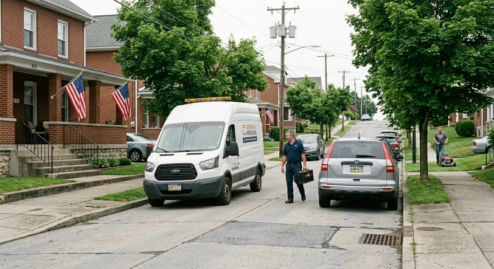

Professional windshield repair, replacement, and mobile auto glass service throughout Altoona and Blair County, Pennsylvania.
If you're searching for "auto glass repair near me" in Altoona, you've found Central PA's trusted auto glass experts. We specialize in windshield repair, replacement, and mobile service throughout Blair County and surrounding areas.
Quick chip and crack repair to stop damage from spreading. Most repairs completed in under 30 minutes.
Complete windshield replacement with OEM-quality glass and lifetime warranty included.
We come to you at home, work, or on the road. Mobile service throughout Blair County.
Fully equipped mobile auto glass unit. Most repairs completed in under an hour at your location.

Windshield repair starts at $75, and full replacement starts from $250 depending on your vehicle. Most insurance claims have $0 deductible for glass repair in Pennsylvania. We work with all insurance providers and handle all paperwork for you.
Yes! Our mobile service covers all of Blair County and the Altoona area. We'll come to your location, whether at home, work, or roadside, to complete the repair or replacement. Most services take under an hour.
In Pennsylvania, comprehensive insurance typically covers auto glass repair with no deductible. Pennsylvania law requires insurance companies to waive the deductible for windshield repair. We'll handle all insurance paperwork and bill directly, so you pay nothing out of pocket in most cases.
Standard windshield replacement takes 60-90 minutes. After installation, we recommend waiting 1 hour before driving. We offer same-day appointments and mobile service throughout the Altoona area.
Free estimates for all auto glass services in Altoona and Blair County. No obligation, no pressure.
📞 814-201-7769